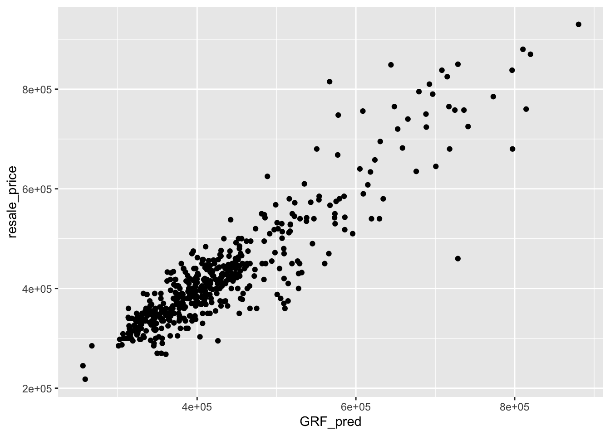

pacman::p_load(httr, tidyverse, sf, tmap, jsonlite, progress)08a - Kick starter - Geographically Weighted Predictive Modelling
1 Overview
This exercise is to:
- prepare and geocode HDB resale price data for geospatial modelling; and
- perform proximity analysis to count the number of geographic entities located within a defined distance from each HDB property.
2 Installing and Loading R packages
One new package called jsonlite will be installed and loaded onto R environment. It will be used to parse json file into R as data frame.
Additional packages for predive modelling
pacman::p_load(spdep, GWmodel, SpatialML, rsample, Metrics, knitr,
kableExtra, spatialRF, randomForestExplainer)progress - to monitor and track the computation.
3 Geocoding HDB resale data
We use OneMap Geocode API:
https://www.onemap.gov.sg/apidocs/.
ttps://www.onemap.gov.sg/apidocs/reverseGeocode
One must download Resale flat prices based on registration date from Jan-2017 onwards from Singapore’s open data portal.
3.1 Selecting data of interest
This data set comprises of HDB resale transactions from Jan 2017 onwards. For the purpose of this in-class exercise, the code chunk below will be used to extract a sub-set of transaction records on 4-Room flat transacted on the month September 2025.
HDBresale <- read_csv(
"data/rawdata/HDBresale.csv") %>%
filter(flat_type == "4 ROOM") %>%
filter(month >= "2025-09" & month < "2025-10") # filter the sample data for the exercise.
write_rds(HDBresale, "data/rds/HDBresale.rds")Rows: 964
Columns: 11
$ month <chr> "2025-09", "2025-09", "2025-09", "2025-09", "2025-…
$ town <chr> "ANG MO KIO", "ANG MO KIO", "ANG MO KIO", "ANG MO …
$ flat_type <chr> "4 ROOM", "4 ROOM", "4 ROOM", "4 ROOM", "4 ROOM", …
$ block <chr> "337", "542", "456", "561", "542", "472", "546", "…
$ street_name <chr> "ANG MO KIO AVE 1", "ANG MO KIO AVE 10", "ANG MO K…
$ storey_range <chr> "01 TO 03", "04 TO 06", "10 TO 12", "10 TO 12", "0…
$ floor_area_sqm <dbl> 91, 93, 100, 92, 93, 92, 92, 98, 92, 98, 92, 108, …
$ flat_model <chr> "New Generation", "New Generation", "New Generatio…
$ lease_commence_date <dbl> 1982, 1981, 1980, 1980, 1981, 1979, 1981, 1978, 19…
$ remaining_lease <chr> "55 years 05 months", "54 years 05 months", "53 ye…
$ resale_price <dbl> 530000, 550000, 560000, 550000, 480000, 512888, 51…We do further processing for the data as the street names with Saint are usually written as St.
# street names is ST, but it's actually Sait.
HDBresale$street_name <- gsub(
"ST\\.", "SAINT",
HDBresale$street_name
)Now we will prepare a geocoding function. It aims to perform the following tasks:
- Combining the block and street name into an address. The addresses will be used to geocode instead of postal code that you learned in In-class Exercise 3b,
- Passing the address as the searchVal in our query,
- Sending the query to OneMapSG search. Note: Since we don’t need all the address details, we can set getAddrDetails as ‘N’,
- Converting response (JSON object) to text,
- Saving response in text form as a dataframe, and
- Retain the latitude and longitude for our output.
# for multiple queries
geocode <- function(block, streetname) {
base_url <- "https://onemap.gov.sg/api/common/elastic/search"
address <- paste(block, streetname, sep = " ")
query <- list("searchVal" = address,
"returnGeom" = "Y",
"getAddrDetails" = "N", #No. can change to Y for comparison
"pageNum" = "1")
res <- GET(base_url, query = query) #get URL query
restext <- content(res, as = "text")
output <- fromJSON(restext) %>%
as.data.frame %>%
select(results.LATITUDE, results.LONGITUDE)
return(output)
}Need below to run the functions
HDBresale$LATITUDE <- 0
HDBresale$LONGITUDE <- 0
for(i in 1:nrow(HDBresale)){
temp_output <- geocode(HDBresale[i, 4], HDBresale[i, 5])
HDBresale$LATITUDE[i] <- temp_output$results.LATITUDE
HDBresale$LONGITUDE[i] <- temp_output$results.LONGITUDE
}4 Proximity analysis
We will learn how to count the number of geographic entities located within a defined distance from each HDB property.
For the purpose of this exercise, we are interested to count the number of preschools located with 350m of each resale HDB unit.
4.1 Transform to sf data frame
Before performing proximity analysis, it is important to ensure that:
- both input data sets must be in sf objects, and
- they must be in similar projected coordinates systems.
st_crs(HDBresale)Coordinate Reference System: NAHDBresale_sf <- HDBresale %>%
st_as_sf(
coords = c("LONGITUDE", "LATITUDE"),
crs = 4326) %>% #if decimal degree
st_transform(crs = 3414)Note
st_as_sf()is used to convert HDBresale tibble data.frame to sf object by using values from LONGITUDE and LATITUDE columns to form the geometry features.st_transform()is then used to transform the sf object into svy21 projected coordinates system.- the output sf object is called* HDBresale_sf*. It is in sf data.frame format.
4.2 Load preschool data
preschool = st_read("data/rawdata/PreSchoolsLocation.kml") %>%
st_transform(crs = 3414)Reading layer `PRESCHOOLS_LOCATION' from data source
`/Users/cathyc/Documents/cathyschu/ISSS626GEO/In-class_Ex/In-class_Ex08/data/rawdata/PreSchoolsLocation.kml'
using driver `KML'
Simple feature collection with 2290 features and 2 fields
Geometry type: POINT
Dimension: XYZ
Bounding box: xmin: 103.6878 ymin: 1.247759 xmax: 103.9897 ymax: 1.462134
z_range: zmin: 0 zmax: 0
Geodetic CRS: WGS 84From this we will have the geometry data for the preschools.
4.3 Counting number of preschools
Next we will derive a binary data to find out which schools are within 350 meters.
within_350m <- st_is_within_distance(
HDBresale_sf, preschool, dist = 350)
HDBresale_sf <- HDBresale_sf %>%
mutate(prischool_350m = map_int(within_350m, length)
)Note
st_is_within_distance()of sf package is used to determines whether two spatial objects (HDB property and preschool) are within 350m distance of each other. It returns a logical matrix (or a sparse list of indices if sparse = TRUE) indicating for each geometry in HDB property which geometries in preschool are within 350m distance.map_int()of purr package is used to the number of preschools found in the newly created WITHIN_350M_PRISCHOOL field.
4.4 Computing shortest distance
Instead of counting number of preschools located within 350m of each HDB resale property, code chunk below is used to compute the distance between the nearest preschool from each HDB resale property.
HDBresale_sf <- HDBresale_sf %>%
mutate(
PROX_PRESCHOOL = as.numeric(
st_distance(geometry,
preschool[st_nearest_feature(
geometry, preschool), ],
by_element = TRUE)
)
)5 Predictive modeling
5.1 Data set
5.1.1 Data import
mdata <- read_rds("data/rawdata/mdata.rds")5.1.2 Data sampling
Calibrating predictive models are computational intensive, especially random forest method is used. For quick prototyping, a 10% sample will be selected at random from the data by using the code chunk below:
set.seed(1234)
HDB_sample <- mdata %>%
sample_n(1500)5.2 Checking of overlapping point
*** When using GWmodel to calibrate explanaroty or predictive models, it is very important to ensure that there are no overlapping point features ***
Below is to check if there are overlapping point feature - to do spatial jitter.
overlapping_points <- HDB_sample %>%
mutate(overlap = lengths(st_equals(.,.)) > 1)Below we can have a look at overlapping_points, and see the new column overlap showing whether the location has overlapping points. We then calculate how many has overlapping points. In this sample data, we observed 453 overlapping points.
head(overlapping_points)Simple feature collection with 6 features and 18 fields
Geometry type: POINT
Dimension: XY
Bounding box: xmin: 27363.82 ymin: 31714.45 xmax: 41466.54 ymax: 48032.56
Projected CRS: SVY21 / Singapore TM
# A tibble: 6 × 19
resale_price floor_area_sqm storey_order remaining_lease_mths PROX_CBD
<dbl> <dbl> <int> <dbl> <dbl>
1 405000 109 1 787 11.7
2 500888 87 2 662 6.56
3 385000 103 2 821 14.3
4 485000 93 2 1147 13.9
5 418000 93 5 1134 18.2
6 288000 84 1 770 16.3
# ℹ 14 more variables: PROX_ELDERLYCARE <dbl>, PROX_HAWKER <dbl>,
# PROX_MRT <dbl>, PROX_PARK <dbl>, PROX_GOOD_PRISCH <dbl>, PROX_MALL <dbl>,
# PROX_CHAS <dbl>, PROX_SUPERMARKET <dbl>, WITHIN_350M_KINDERGARTEN <int>,
# WITHIN_350M_CHILDCARE <int>, WITHIN_350M_BUS <int>,
# WITHIN_1KM_PRISCH <int>, geometry <POINT [m]>, overlap <lgl>sum(overlapping_points$overlap == "TRUE")[1] 4535.3 Spatial jitter
st_jitter is used to move the point feature by 5m to avoid overlapping point features.
HDB_sample <- HDB_sample %>%
st_jitter(amount = 1)set.seed(1234)
resale_split <- initial_split(HDB_sample,
prop = 6.67/10,)
train_data <- training(resale_split)
test_data <- testing(resale_split)5.4 Constructing the adaptive bandwidth gwr model
bw_adaptive <- bw.gwr(
formula = resale_price ~ floor_area_sqm +
storey_order + remaining_lease_mths +
PROX_CBD + PROX_ELDERLYCARE + PROX_HAWKER +
PROX_MRT + PROX_PARK + PROX_MALL +
PROX_SUPERMARKET + WITHIN_350M_KINDERGARTEN +
WITHIN_350M_CHILDCARE + WITHIN_350M_BUS +
WITHIN_1KM_PRISCH,
data=train_data,
approach="CV",
kernel="gaussian",
adaptive=TRUE,
longlat=FALSE)
write_rds(bw_adaptive, "data/model/bw_adaptive.rds")5.5 Constructing the adaptive bandwidth gwr model
gwr_adaptive <- gwr.basic(
formula = resale_price ~ floor_area_sqm +
storey_order + remaining_lease_mths +
PROX_CBD + PROX_ELDERLYCARE +
PROX_HAWKER + PROX_MRT + PROX_PARK +
PROX_MALL + PROX_SUPERMARKET +
WITHIN_350M_KINDERGARTEN +
WITHIN_350M_CHILDCARE +
WITHIN_350M_BUS + WITHIN_1KM_PRISCH,
data=train_data,
bw=bw_adaptive,
kernel = 'gaussian',
adaptive=TRUE,
longlat = FALSE)
write_rds(gwr_adaptive,
"data/model/gwr_adaptive.rds")5.6 GWR Output
***********************************************************************
* Package GWmodel *
***********************************************************************
Program starts at: 2025-11-04 11:33:17.419822
Call:
gwr.basic(formula = resale_price ~ floor_area_sqm + storey_order +
remaining_lease_mths + PROX_CBD + PROX_ELDERLYCARE + PROX_HAWKER +
PROX_MRT + PROX_PARK + PROX_MALL + PROX_SUPERMARKET + WITHIN_350M_KINDERGARTEN +
WITHIN_350M_CHILDCARE + WITHIN_350M_BUS + WITHIN_1KM_PRISCH,
data = train_data, bw = bw_adaptive, kernel = "gaussian",
adaptive = TRUE, longlat = FALSE)
Dependent (y) variable: resale_price
Independent variables: floor_area_sqm storey_order remaining_lease_mths PROX_CBD PROX_ELDERLYCARE PROX_HAWKER PROX_MRT PROX_PARK PROX_MALL PROX_SUPERMARKET WITHIN_350M_KINDERGARTEN WITHIN_350M_CHILDCARE WITHIN_350M_BUS WITHIN_1KM_PRISCH
Number of data points: 1000
***********************************************************************
* Results of Global Regression *
***********************************************************************
Call:
lm(formula = formula, data = data)
Residuals:
Min 1Q Median 3Q Max
-167624 -37265 -415 34811 224601
Coefficients:
Estimate Std. Error t value Pr(>|t|)
(Intercept) 115703.7 34303.4 3.373 0.000773 ***
floor_area_sqm 2778.6 292.3 9.507 < 2e-16 ***
storey_order 12698.2 1071.0 11.857 < 2e-16 ***
remaining_lease_mths 350.2 14.6 23.997 < 2e-16 ***
PROX_CBD -16225.6 630.1 -25.751 < 2e-16 ***
PROX_ELDERLYCARE -11330.9 3220.8 -3.518 0.000455 ***
PROX_HAWKER -19964.1 4021.1 -4.965 8.10e-07 ***
PROX_MRT -39652.5 5412.3 -7.326 4.92e-13 ***
PROX_PARK -15878.3 4609.2 -3.445 0.000595 ***
PROX_MALL -15910.9 6438.1 -2.471 0.013628 *
PROX_SUPERMARKET -18928.5 13305.0 -1.423 0.155150
WITHIN_350M_KINDERGARTEN 9309.7 2024.3 4.599 4.80e-06 ***
WITHIN_350M_CHILDCARE -1619.5 1181.0 -1.371 0.170572
WITHIN_350M_BUS -447.7 738.7 -0.606 0.544624
WITHIN_1KM_PRISCH -10698.0 1543.5 -6.931 7.55e-12 ***
---Significance stars
Signif. codes: 0 '***' 0.001 '**' 0.01 '*' 0.05 '.' 0.1 ' ' 1
Residual standard error: 61270 on 985 degrees of freedom
Multiple R-squared: 0.7424
Adjusted R-squared: 0.7387
F-statistic: 202.7 on 14 and 985 DF, p-value: < 2.2e-16
***Extra Diagnostic information
Residual sum of squares: 3.698259e+12
Sigma(hat): 60874.22
AIC: 24901.01
AICc: 24901.56
BIC: 24090.05
***********************************************************************
* Results of Geographically Weighted Regression *
***********************************************************************
*********************Model calibration information*********************
Kernel function: gaussian
Adaptive bandwidth: 19 (number of nearest neighbours)
Regression points: the same locations as observations are used.
Distance metric: Euclidean distance metric is used.
****************Summary of GWR coefficient estimates:******************
Min. 1st Qu. Median 3rd Qu.
Intercept -1791428.88 -214446.81 21746.20 257578.83
floor_area_sqm -3179.59 1231.26 2028.42 3305.14
storey_order 3239.39 8099.55 10335.65 13828.45
remaining_lease_mths -532.05 343.58 421.29 502.66
PROX_CBD -108605.52 -23395.68 -10648.30 -783.78
PROX_ELDERLYCARE -261721.26 -25806.00 -5956.08 18381.34
PROX_HAWKER -217081.26 -36085.21 -9972.22 21334.82
PROX_MRT -302039.97 -92333.72 -57017.51 -20446.74
PROX_PARK -258097.15 -33745.52 -16670.47 8320.49
PROX_MALL -274797.44 -35638.26 6943.53 48945.77
PROX_SUPERMARKET -176198.56 -42935.81 -7711.04 30245.81
WITHIN_350M_KINDERGARTEN -43551.70 -9105.71 -2535.12 5566.02
WITHIN_350M_CHILDCARE -15142.40 -2227.73 1241.19 3473.07
WITHIN_350M_BUS -10844.53 -1809.75 506.21 2313.07
WITHIN_1KM_PRISCH -50621.92 -4109.15 357.23 4933.83
Max.
Intercept 1520325.69
floor_area_sqm 7811.16
storey_order 26827.20
remaining_lease_mths 775.98
PROX_CBD 126370.94
PROX_ELDERLYCARE 178548.71
PROX_HAWKER 145934.03
PROX_MRT 128454.43
PROX_PARK 88656.74
PROX_MALL 339627.85
PROX_SUPERMARKET 185488.00
WITHIN_350M_KINDERGARTEN 40733.28
WITHIN_350M_CHILDCARE 15751.82
WITHIN_350M_BUS 11737.06
WITHIN_1KM_PRISCH 32872.55
************************Diagnostic information*************************
Number of data points: 1000
Effective number of parameters (2trace(S) - trace(S'S)): 419.1226
Effective degrees of freedom (n-2trace(S) + trace(S'S)): 580.8774
AICc (GWR book, Fotheringham, et al. 2002, p. 61, eq 2.33): 24103.97
AIC (GWR book, Fotheringham, et al. 2002,GWR p. 96, eq. 4.22): 23393.88
BIC (GWR book, Fotheringham, et al. 2002,GWR p. 61, eq. 2.34): 24424.61
Residual sum of squares: 599896185272
R-square value: 0.9582109
Adjusted R-square value: 0.9280067
***********************************************************************
Program stops at: 2025-11-04 11:33:18.171179 Based on the result of the modelling above, p-value is much smaller than 0.05. We see the adjusted R^2 = 0.7387, meaning that this model can explain 73% of the data using the variables.
The AICc = 24901.56 for Global Regression model is much larger than Geographically Weighted Regression’s AICc = 24103.97. The difference of approximately 797.6 points is quite significant. This suggests the GWR model provides meaningfully better predictions and fit.
Explanatory variables:
Plot out the significant variables to show distribution and explain which ones have higher/lower influence over the model.
5.7 Compute Collinearity Matrix
par(bg = "#D0DDD0")
mdata_nogeo <- mdata %>%
st_drop_geometry()
corrplot::corrplot(cor(mdata_nogeo[, 2:17]),
diag = FALSE,
order = "AOE",
tl.pos = "td",
tl.cex = 0.8,
method = "number",
type = "upper",
number.cex = 0.8,
bg = "white")
6 Predictive Modeling using MLR
6.1 Building a non-spatial multiple linear regression
price_mlr <- lm(resale_price ~ floor_area_sqm +
storey_order + remaining_lease_mths +
PROX_CBD + PROX_ELDERLYCARE + PROX_HAWKER +
PROX_MRT + PROX_PARK + PROX_MALL +
PROX_SUPERMARKET + WITHIN_350M_KINDERGARTEN +
WITHIN_350M_CHILDCARE + WITHIN_350M_BUS +
WITHIN_1KM_PRISCH,
data=train_data)
write_rds(price_mlr, "data/model/price_mlr.rds")
Call:
lm(formula = resale_price ~ floor_area_sqm + storey_order + remaining_lease_mths +
PROX_CBD + PROX_ELDERLYCARE + PROX_HAWKER + PROX_MRT + PROX_PARK +
PROX_MALL + PROX_SUPERMARKET + WITHIN_350M_KINDERGARTEN +
WITHIN_350M_CHILDCARE + WITHIN_350M_BUS + WITHIN_1KM_PRISCH,
data = train_data)
Residuals:
Min 1Q Median 3Q Max
-167624 -37265 -415 34811 224601
Coefficients:
Estimate Std. Error t value Pr(>|t|)
(Intercept) 115703.7 34303.4 3.373 0.000773 ***
floor_area_sqm 2778.6 292.3 9.507 < 2e-16 ***
storey_order 12698.2 1071.0 11.857 < 2e-16 ***
remaining_lease_mths 350.2 14.6 23.997 < 2e-16 ***
PROX_CBD -16225.6 630.1 -25.751 < 2e-16 ***
PROX_ELDERLYCARE -11330.9 3220.8 -3.518 0.000455 ***
PROX_HAWKER -19964.1 4021.1 -4.965 8.10e-07 ***
PROX_MRT -39652.5 5412.3 -7.326 4.92e-13 ***
PROX_PARK -15878.3 4609.2 -3.445 0.000595 ***
PROX_MALL -15910.9 6438.1 -2.471 0.013628 *
PROX_SUPERMARKET -18928.5 13305.0 -1.423 0.155150
WITHIN_350M_KINDERGARTEN 9309.7 2024.3 4.599 4.80e-06 ***
WITHIN_350M_CHILDCARE -1619.5 1181.0 -1.371 0.170572
WITHIN_350M_BUS -447.7 738.7 -0.606 0.544624
WITHIN_1KM_PRISCH -10698.0 1543.5 -6.931 7.55e-12 ***
---
Signif. codes: 0 '***' 0.001 '**' 0.01 '*' 0.05 '.' 0.1 ' ' 1
Residual standard error: 61270 on 985 degrees of freedom
Multiple R-squared: 0.7424, Adjusted R-squared: 0.7387
F-statistic: 202.7 on 14 and 985 DF, p-value: < 2.2e-167 Random Forest Model
7.1 Prepare data
coords <- st_coordinates(mdata)
coords_train <- st_coordinates(train_data)
coords_test <- st_coordinates(test_data)coords_train <- write_rds(coords_train,
"data/model/coords_train.rds" )
coords_test <- write_rds(
coords_test,
"data/model/coords_test.rds" )7.2 Dropping geometry field
We will drop geometry column of the sf data.frame by using st_drop_geometry() of sf package.
train_data_nogeom <- train_data %>%
st_drop_geometry()
test_data_nogeom <- test_data %>%
st_drop_geometry()7.3 Calibrating a non-spatial random forest model
set.seed(1234)
rf <- ranger(
formula = resale_price ~ floor_area_sqm +
storey_order + remaining_lease_mths +
PROX_CBD + PROX_ELDERLYCARE +
PROX_HAWKER + PROX_MRT + PROX_PARK +
PROX_MALL + PROX_SUPERMARKET +
WITHIN_350M_KINDERGARTEN +
WITHIN_350M_CHILDCARE +
WITHIN_350M_BUS +
WITHIN_1KM_PRISCH,
data=train_data_nogeom)
write_rds(rf, "data/model/rf.rds")Ranger result
Call:
ranger(formula = resale_price ~ floor_area_sqm + storey_order + remaining_lease_mths + PROX_CBD + PROX_ELDERLYCARE + PROX_HAWKER + PROX_MRT + PROX_PARK + PROX_MALL + PROX_SUPERMARKET + WITHIN_350M_KINDERGARTEN + WITHIN_350M_CHILDCARE + WITHIN_350M_BUS + WITHIN_1KM_PRISCH, data = train_data_nogeom)
Type: Regression
Number of trees: 500
Sample size: 1000
Number of independent variables: 14
Mtry: 3
Target node size: 5
Variable importance mode: none
Splitrule: variance
OOB prediction error (MSE): 2283173758
R squared (OOB): 0.8411121 7.4 Calibrating Geographical Weighted Random Forest Model
7.4.1 Calibrating with training data
Below we calibrate a geographic random forest model by using grf() of SpatialML package.
set.seed(1234)
gwRF_adaptive <- grf(
formula = resale_price ~ floor_area_sqm +
storey_order + remaining_lease_mths +
PROX_CBD + PROX_ELDERLYCARE +
PROX_HAWKER + PROX_MRT + PROX_PARK +
PROX_MALL + PROX_SUPERMARKET +
WITHIN_350M_KINDERGARTEN +
WITHIN_350M_CHILDCARE +
WITHIN_350M_BUS + WITHIN_1KM_PRISCH,
dframe=train_data_nogeom,
bw=40,
kernel="adaptive",
coords=coords_train)
write_rds(gwRF_adaptive, "data/model/gwRF_adaptive.rds")7.4.1 Predicting with test data
7.4.1.1 Prepare data
test_data_nogeom <- cbind(
test_data, coords_test) %>%
st_drop_geometry()7.4.1.1 Predicting with test data
gwRF_pred <- predict.grf(gwRF_adaptive,
test_data_nogeom,
x.var.name="X",
y.var.name="Y",
local.w=1,
global.w=0)
write_rds(gwRF_pred, "data/model/GRF_pred.rds")7.4.1.1 Converting the predicting output into a data frame
GRF_pred <- read_rds("data/model/GRF_pred.rds")
GRF_pred_df <- as.data.frame(GRF_pred)test_data_p <- cbind(
test_data, GRF_pred_df) %>%
select(resale_price, GRF_pred)7.4.2 Calculating Root Mean Square Error
rmse(test_data_p$resale_price,
test_data_p$GRF_pred)[1] 47652.987.4.3 Visualising the predicted values
ggplot(data = test_data_p,
aes(x = GRF_pred,
y = resale_price)) +
geom_point()
Training results
- MLR vs GWR: Use AICc → GWR wins (24,104 < 24,902)
- RF vs GRF: Use OOB R² → GRF slightly better (84.87% > 84.11%)
- Need to test predictions to determine which is the best.